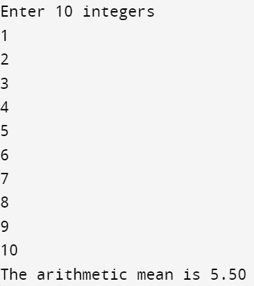

#include<stdio.h>
int sum(int arr[], int n)
{
if (n == 0 || n < 0)
{
return 0;
}
else
{
return (arr[n - 1] + sum(arr, n - 1));
}
}
float find_mean(int arr[], int n)
{
int s = sum(arr, n);
return ((float)s / n);
}
int main()
{
int arr[10];
printf("Enter 10 integers\n");
for (int i = 0; i < 10; i++)
{
scanf("%d", &arr[i]);
}
printf("\nThe arithmetic mean is %.2f\n", find_mean(arr, 10));
return 0;
}
Output:
